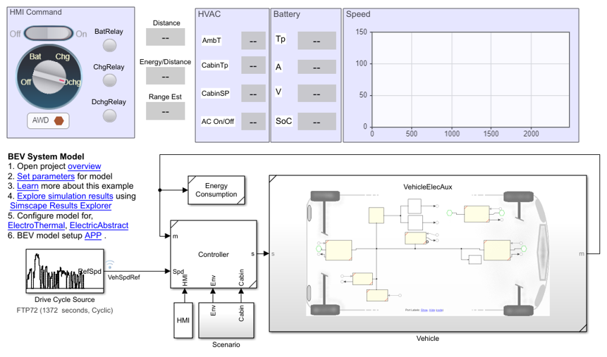

Electric Vehicle Design with Simscape™
This repository contains model and code to help engineers design battery electric vehicle (BEV), including range estimation and battery sizing workflows.
Contents
Overview
Battery electric vehicles (BEV) are gaining popularity as the prices of battery cells fall and the consumer demand for a clean mobility solution increases. The key challenges in their adoption lie in addressing the vehicle range anxiety, safety, and the total ownership cost for the consumer. Li-ion based batteries and electric drivetrains with permanent magnet synchronous motors (PMSM) and/or induction motors power modern BEV systems. Modeling and simulation helps you design vehicles that meet the desired range on the road and perform under all environmental conditions. Virtual design of a BEV platform requires a coupled electro-thermal system model for performance evaluation. In this example repository, you learn how to simulate a BEV AWD/FWD model to estimate its on-road range. You also learn how to size your HV battery pack to achieve your desired range with the vehicle.
Design Workflows
Documentation
Models
Acronyms
- BEV : Battery Electric Vehicle
- PMSM : Permanent Magnet Synchronous Motor
- AWD : All Wheel Drive
- FWD : Forward Wheel Drive